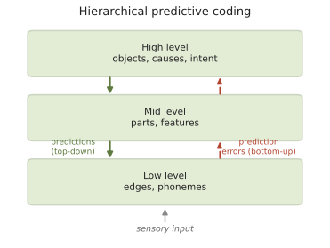

脑 III · 回路、编码与预测
证据地位：感受野、群体编码、奖赏预测误差【实】；预测编码作为皮层通用原理【争】。 从单个突触上升到群体。核心问题变成：信息如何被一群神经元表示？回路如何计算？本页的落点是一个越来越有影响的主张——皮层的核心工作可能是预测，这也是本站与语言站（🔗 :8086 线五）交汇的地方。
一、编码：神经元表示什么
感受野：Hubel 与 Wiesel（诺奖）记录猫的视皮层，发现 V1 神经元不响应弥散光斑，而响应特定朝向的边缘。沿视觉通路存在层级：
这个层级结构直接启发了卷积神经网络（局部感受野、层级特征、权重共享），是神经科学对 AI 影响最深的一笔（🔗 AI 站）。
编码方式的几个概念：
- 稀疏编码：任一时刻只有小部分神经元活跃。既节能（承线二：脑很贵），又利于解码。V1 的朝向选择性可以从"用稀疏基底重构自然图像"这一优化目标中推导出来（Olshausen & Field）——这是"神经表征是对自然统计的最优编码"这一思想的经典范例。
- 群体编码：单个神经元的调谐宽而含噪，但一群神经元的联合活动可精确表示变量。经典例子是运动皮层的群体向量：每个神经元对某个运动方向弱调谐，加权求和后能准确预测手臂运动方向——这正是脑机接口解码的原理基础（线六第六页）。
- 时间编码 vs 率编码：信息在发放频率里，还是在精确时刻里？两者都有证据，依系统而异（听觉系统的相位锁定明显依赖时刻）。
二、几个有代表性的回路计算
① 侧抑制与对比增强：视网膜与感觉系统中，活跃单元抑制邻居 → 边界被增强（马赫带错觉的成因）。数学上近似空间上的高通滤波——回路结构直接实现了一个算子。
② 吸引子网络：循环连接可使网络活动稳定在若干"吸引子"状态。环形吸引子是被验证得最漂亮的一例——果蝇的中央复合体中存在一圈神经元，其活动峰编码动物的朝向，并随转身而在环上移动，即使黑暗中也能靠自身运动更新。这是一个被完整验证的"神经计算装置"，从解剖结构到动力学模型到行为，全线贯通。（哺乳动物的头方向细胞与之功能类似。）
③ 空间表征：海马的位置细胞（O'Keefe）与内嗅皮层的网格细胞（Moser 夫妇）——后者的放电场在环境中排成规则的六边形晶格，共获 2014 年诺奖。大脑内建了一套度量空间的坐标系；且越来越多证据显示同一套机制也用于组织非空间的概念关系（"认知地图"的广义版本）【争，但证据渐增】。
④ 奖赏预测误差：中脑多巴胺神经元的发放不编码奖赏本身，而编码实际奖赏 − 预期奖赏：意外奖赏 → 爆发；已预期的奖赏 → 无反应；预期而未得 → 抑制。这与强化学习中的 TD 误差在数学形式上直接对应（Schultz、Dayan、Montague）——是计算理论与神经数据吻合得最好的案例之一（🔗 AI 站强化学习）。
三、皮层的一般结构
新皮层有相当规整的六层结构，各层的输入输出分工大致固定（第 4 层接收丘脑输入，2/3 层做皮层间水平通信，5/6 层输出到皮层下与丘脑）。皮层柱假说主张存在重复的功能单元。
规整性引出一个大胆猜想：既然视觉、听觉、体感、运动皮层的微观结构如此相似，是否存在一个通用的皮层算法，只因输入不同而学出不同功能？
支持证据：发育重接线实验中，把视觉输入导向听觉皮层，听觉皮层会发育出视觉样的感受野与朝向图；盲人的"视觉"皮层被触觉与语言任务征用。保留意见：不同区域仍有可观的细胞类型与连接差异，"通用"是近似而非严格。这仍是一个开放且重要的问题【争】。
四、预测编码：一个统一的候选原理
本页的落点。预测编码主张：皮层不是被动接收信号，而是自上而下不断生成对输入的预测，向上传递的主要是预测误差。

支持的现象：
- 重复抑制：重复刺激引起的反应减弱（被预测掉了）；
- 失匹配负波（MMN）：偏离规律的刺激引发特征性脑电成分；
- 知觉填补与错觉：知觉是"被感官约束的最佳猜测"；
- 感觉衰减：自己挠自己不痒（自身动作的后果可被预测并抵消）。
信息论含义（🔗 语言站 :8086）：只上传误差 = 只传"意外" = 对感觉流的高效压缩。同一个量 \(-\log P\) 同时是加工难度、压缩残差、与贝叶斯惊异——这条跨层级的守恒，是"预测"作为核心概念最有力的地方。
必须的保留【争】：
- 预测编码能干净解释知觉，是否为全脑通用原理（运动、决策、抽象推理都算？）远未定论；
- 解剖学上，"预测"与"误差"是否由不同神经元群体分别承载，证据尚不充分；
- 自由能原理（Friston）把它推到极致，试图统一一切自适应系统。它数学优雅，但可证伪性受到严肃质疑——一个能解释一切的框架，往往排除不了任何观察。本课标【争】，不作为结论。
五、抑制、节律与网络状态
- 抑制性中间神经元只占皮层神经元约 20%，但类型极其多样（PV、SST、VIP 等），各自靶向锥体细胞的不同部位，实现增益控制、时间窗限定与选择性门控。抑制不是"减法"，而是塑形与选路。
- 脑节律：θ（4–8 Hz）、γ（30–80 Hz）等振荡协调不同区域的通信时间窗。"通过一致性通信"假说认为，相位对齐的区域间信息传递更有效【争，仍在检验】。
- 状态调制：清醒/睡眠/注意状态由神经调质系统（上页）大范围改变网络增益。同一回路在不同状态下计算不同的东西——这提醒我们，"回路功能"不是固定的。
六、从回路到行为的距离
最后一句诚实的话。我们对单个神经元的理解相当深（可写方程），对小回路有若干漂亮的完整案例（环形吸引子、视网膜），但对认知（决策、语言、推理）如何由回路实现，理解仍然粗浅。
这道鸿沟正是当前神经科学的主战场，也是接下来三页的动机：连接组学试图给出完整的接线图（下一页），记忆研究试图定位信息的物理载体，意识研究则直面最难的那一端。
下一页：脑 IV——连接组学。如果有了每一个神经元和每一个突触的完整地图，我们能理解大脑吗？这个问题现在有了真实的数据可以回答。